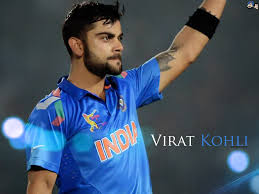

FootballFootball is a family of team sports that involve, to varying degrees, kicking a ball to score a goal. Unqualified, the word football is understood to refer to whichever form of football is the most popular in the regional context in which the word appears. Sports commonly called 'football' in certain places include: association football (known as soccer in some countries); gridiron football (specifically American football or Canadian football); Australian rules football; rugby football (either rugby league or rugby union); and Gaelic football.[1][2] These different variations of football are known as football codes. |
CricketTwenty-eight years after they first won the World Cup, India became the second team not called Australia (West Indies is the other) to win a second title. Favourites going into the tournament, the tenth, they came up against Sri Lanka, playing their second World Cup final in a row, and broke a number of hoodoos in the Mumbai final: of home teams never having won the title, teams chasing having won only twice before, and century-makers in finals never having finished on the losing side. When Mahela Jayawardene produced a perfectly paced hundred and Lasith Malinga struck early to reduce them to 31 for 2, India looked a long shot, but Gautam Gambhir anchored them with a resolute 97. Then MS Dhoni, the captain, walked out at No. 5 instead of Yuvraj Singh - who was later voted Man of the Tournament - and delivered an innings for the ages, seeing off the threat of Muttiah Muralitharan, playing in his last game, and finishing proceedings majestically with a six clouted high over long-on to cue night-long celebrations all over Mumbai and India. |
TennisTennis is a racket sport that can be played individually against a single opponent (singles) or between two teams of two players each (doubles). Each player uses a tennis racket that is strung with cord to strike a hollow rubber ball covered with felt over or around a net and into the opponent's court. The object of the game is to play the ball in such a way that the opponent is not able to play a valid return. The player who is unable to return the ball will not gain a point, while the opposite player will. |
News & Events
Nov. 17, 2012. Twenty-eight years after they first won the World Cup, India became the second team not called Australia (West Indies is the other) to win a second title. Favourites going into the tournament, the tenth, they came up against Sri Lanka, playing their second World Cup final in a row, and broke a number of hoodoos in the Mumbai final: of home teams never having won the title, teams chasing having won only twice before, and century-makers in finals never having finished on the losing side. When Mahela Jayawardene produced a perfectly paced hundred and Lasith Malinga struck early to reduce them to 31 for 2, India looked a long shot, but Gautam Gambhir anchored them with a resolute 97. Then MS Dhoni, the captain, walked out at No. 5 instead of Yuvraj Singh - who was later voted Man of the Tournament - and delivered an innings for the ages, seeing off the threat of Muttiah Muralitharan, playing in his last game, and finishing proceedings majestically with a six clouted high over long-on to cue night-long celebrations all over Mumbai and India. Feb. 20, 2013. |